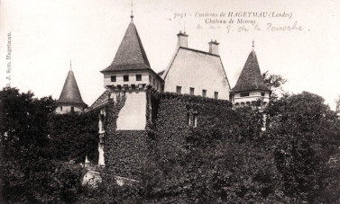

Château de Momuy
Château de Momuy
Résumé
Lieu : Momuy, Landes (40700) Lien familial : Marguerite Delemer (1876-1953), épouse d'André Saint-Léger
Momuy est un petit village de Chalosse dans les Landes, situé sur une colline à 100 mètres d'altitude dominant la vallée du Luy de France, sur la route entre Hagetmau et Orthez. Le bourg, érigé en bastide par une charte du 30 septembre 1341 signée par Édouard III roi d'Angleterre en faveur du baron de Momuy, est l'un des bourgs les plus anciens de la région. La seigneurie appartient à la famille d'Arzac jusqu'en 1660, puis passe par alliance à la famille de Saint-Julien qui la conserve jusqu'à la Révolution. Le château, construit au XVIe siècle sur un éperon rocheux dominant la vallée, a conservé son allure féodale : donjon, tourelles d'angle et fenêtres à meneaux.
Le château appartient Jean Delemer et Marie Agache, cousins de Marguerite Delemer.
"La propriété familiale (environs de Lille) ayant été retrouvée rasée en 14/18, au lieu de la rebâtir, comme cela s'était fait à la fin de la guerre de 1870, elle a convaincu son mari d'acheter Momuy, aussi loin que possible des lignes de front à venir éventuellement"
Durant la Seconde Guerre mondiale, le château de Momuy joue un rôle humanitaire remarquable : pendant presque deux ans, il accueille des personnes de la maison de retraite des Établissements Agache, évacuées de Pérenchies — les usines Agache se trouvant à moins de trois kilomètres du front. Ce geste illustre parfaitement le paternalisme social qui caractérisait le patronat catholique nordiste : les propriétaires mettent leur résidence méridionale au service des œuvres sociales attachées à l'entreprise.
Une villa voisine du château, la maison "à côté de la grille", a été habitée par au moins une famille sur plusieurs générations, dont des témoins encore vivants gardent le souvenir de leur enfance à Momuy. Ces traces humaines confirment que le château et ses dépendances ont constitué un lieu de vie réel et durable pour plusieurs familles liées aux Établissements Agache.
Après Delemer, la propriété passe à Mme Diriard, qui en hérite ou l'acquiert — un changement de propriété à préciser dans les archives notariales des Landes.
Sources :
- Association "Si Pérenchies m'était contée" (siperenchiesmetaitcontee.blogspot.com, réunion du 28 août 2025)
- chateau-fort-manoir-chateau.eu
- Wikipédia (Momuy)
- données familiales Gramps. Actes notariés à vérifier aux Archives départementales des Landes (Dax). https://gw.geneanet.org/gderoquefeuil?n=agache&oc=&p=marie+lucie&type=fiche
https://siperenchiesmetaitcontee.blogspot.com/2025/09/au-fil-de-nos-reunions-jeudi-28-aout_0550608248.html
{kind=link}

{kind=link}
{kind=link}
{kind=link}
{kind=link}
{kind=link}
{kind=link}
{kind=link}
{kind=link}
{kind=link}
{kind=link}
{kind=link}
{kind=link}
📷 Cliquez pour voir 13 photo(s)